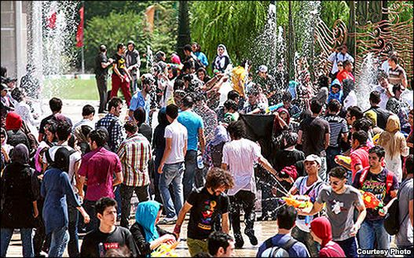
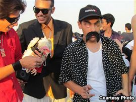

|
|

دو کارناوال شادی بخش و باقی قضایا
شنبه15 مرداد 1390
تغییر برای برابری: دو کارناوال در تهران . دو گردهم آیی فقط برای شادی. عکسها ناخودآگاه لبخند به لب می آورند و چهره عبوس و گرفته شهر را لحظه ای به خنده وا می دارند ، تصویری که در خیابانها واماکن عمومی این شهر کمتر به چشم می خورند.

در تابستان داغ و گرم تهران، در مرداد ماه ، اول گروهی از جوانان از طریق شبکه اجتماعی فیس بوک قراری می گذارند تا برای آب بازی به پارک آب و آتش تهران بروند. جمعیتی حدود 400 نفر از این فراخوان استقبال می کنند و پارک آب و آتش برای چند ساعتی پر از شور و نشاط می شود.اتفاق دیگری هم در پارک پردیسان تهران می افتد. آنجا هم گروهی فستیوال خزها را راه می اندازند و با لباسهای از مد افتاده دور هم جمع می شوند. عکسهای این دو فستیوال بلافاصله در اینترنت منتشر می شود و بعد نوبت اظهار نظرهاست: عده ای معتقدند شادی حق انسانهاست و باید به جوانان فرصت شادی کردن داد, عده ای دیگر این شادی در ملاعام را مخالف عرف و موازین شرعی جامعه می دانند و با آن مخالفند
البته نهادهای قانونی هم مجددا وارد عمل می شوند. قابل پیش بینی است که از یک طرف توطئه گران خارجی را مسبب بدانند و از طرف دیگر برخورد با جوانان را در پیش بگیرند هرچند نمی توانند جلوی لبخند خود را بگیرند! چند روز پس از برگزاری این دو فستیوال شروع به برخورد می کنند. چند جوان بازداشت می شوند و برنامه ۲۰:۳۰ تصاویری از اعتراف آنها را پخش می کند اما این شبکه فیس بوکی از ۲۰:۳۰ تشکر هم می کند.
گزارش دویچه وله: آب بازی در تهران! رشته ای که سر دراز دارد
سردار روزبهانی ، فرمانده پلیس امنیت اخلاقی نیز در گفت و گو با خبرنگار صدا و سیما ، این افراد را هنجار شکن می نامد و می گوید که با هماهنگی به عمل آمده با قوه قضاییه ، با این افراد برخورد شدیدی خواهد شد.

خبر در رسانه ها نیز حسابی سروصدا می کند. برخی از رسانه های حکومتی شهرداری تهران را مسئول این برنامه ها می داند و از عملکرد آن انتقاد می کنند. در پاسخ, شهردار تهران اعلام می کند که هیچ نقشی در برگزاری چنین برنامه هایی نداشته است. تا چند روز تمام وبسایتها و خبرگزاریها به انعکاس خبر این دو رویداد و اظهار نظرهای بعد از آن پرداختند و همچنان این تصاویر در فیس بوک در حال چرخش است .
اخیر وبلاگ ایزوپ مطلبی کوتاه را با عنوان "اندر باب کارناوال خزها و آب پاشها و مراجع قدرت" منتشر کرده و از منظر باختین به این گردهمایی پرداخته است که در زیر می خوانید:
قدرت جدی و عبوس است. مراجع قدرت هم معمولا تمایلی به از بین بردن این جدیت ندارند؛ بخصوص وقتی ماهیت قدرت تهدید می شود و کنترل اجتماعی شدیدتر. فقط کافی است این بحث را در یک موقعیت کوچک تر تصور کنید: وقتی پدر خانواده از دست یکی از بچههایش به خاطر یک مساله بزرگ یا کوچک عصبانی است؛ و بقیه جرات ندارند حرفی بزنند، حرکتی انجام دهند که توجه را جلب کند، یا حتی به این مساله بی اعتنا باشند؛ چه برسد به اینکه بخواهند شوخی و خنده راه بیندازند. در جدیت موقعیتی که پدر به وجود آورده، همه باید شریک باشند.
مردمان دوران قدیم این نکته را خوب دریافته بودند، و کارناوالها را ابداع کردند. کارناوالها موقعیتهایی برای سرکشی، سرخوشی، شادی و سرگرمی بودند؛ تا بخشی از آن جدیت قدرت را بشکنند و اجازه دهند جامعه نفسی بکشد؛ حتی اگر شده برای یک روز. جشنهایی که برای دیونیزوس، خدای شراب و باروری، در یونان قدیم برگزار میشد شاید معروفترین این کارناوالها باشند. امروزه هم جشنهای پر زرق و برق و شلوغ برزیلی و اسپانیایی در خیابانها را دیدهاید. میخاییل باختین از مهمترین کسانی است که خاصیت جدلی این کارناوالها را تئوریزه کرده است. طبق گفته او، اصول کارناوال اینها هستند: دیوانگی، خنده و سرخوشی، دوری از هرگونه جدیت و درستاندیشی، ارتباط آزاد و دوستانه بین مردم، رفتار و حرکات و گفتارِ عاری از هرگونه اعتنا به مراجع قدرت سلسلهمراتبی (مثل دولت، طبقه اجتماعی، سن، دارایی) و تغییر قیافه و وضعیت (یعنی تحول خودخواسته در لباس و موقعیت و حتی سرنوشت). میبینید که چقدر این اصول با آن قدرت جدی و عبوس فاصله دارند.
دو خبری که دربارهی جشن آبپاشي در پارك آب و آتش تهران (اینجا) و اولین گردهمایی خزها در پارک پردیسان تهران (اینجا و بقیهاش) این چند روزه در ایران خیلی سر و صدا کرده، دقیقاً واجد همهی آن ویژگیهایی است که باختین ذکر میکند. بیجهت نیست که این دختر و پسرها مجرم و خطرناک توصیف میشوند، آن هم در جامعهای که خطرات و جرایم بارزتری وجود دارند. آنها خطرناکترند چون جدیت قدرت را نادیده میگیرند و آن را به شوخی میگیرند. آنها همان بچههای سرتقی هستند که موقع عصبانیت پدر عبوسشان، بساط خنده و شوخی راه میاندازند؛ و حکمشان قطعاً تنبیه است.